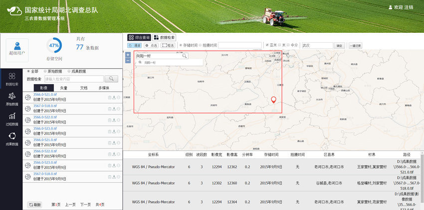
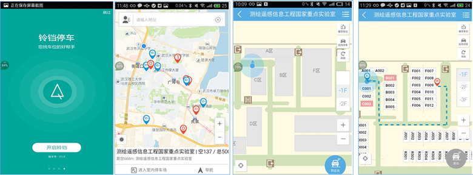
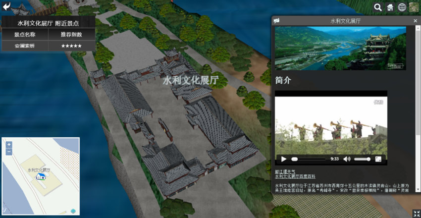

个人简介
武大理科姑娘，心细到有些强迫症，热爱旅游、摄影，喜欢挑战自己，着迷于解决问题时的喜悦^-^
最近的项目
遥感云平台
实时更新卫星原始数据，整合行业综合服务管理平台和遥感监测平台
职责范围：项目近期刚启动，本人目前负责产品设计和页面框架搭建工作
相关技术：OpenLayers jQuery
自然语言驱动的地图可视化
可适应不同应用背景、不同用户目的、不同场景格局的室内地图可视化.
职责范围：负责Unity与网页交互的部分，室内三维地图的相关可视化功能以及新模型的添加
相关技术：Unity3D jQuery
三农普数据管理系统
三农普数据管理系统能有效的对农业普查的影像数据进行管理，用户通过该系统能进行基于地理位置的信息浏览、查询、搜索、上传下载等各类应用
职责范围：负责地名地址查询与定位服务
相关技术：jQuery Ajax OpenLayers

智能混合定位与室内GIS技术
该系统为一款手机室内停车导航app，利用蓝牙和超声波实现室内定位与空车位识别
职责范围：负责其中的界面设计、室内停车场数字化与地图形状规则化算法的编写，以及后台系统界面的搭建
相关技术：Java 数据结构 Bootstrap Echarts

基于WebGL的天地图景区三维GIS的设计与实现
该系统选择都江堰景区作为实验区，并以“天地图•四川”为载体，构建基于WebGL的多终端天地图景区三维信息系统，实现了景区二三维平台的联动、空间分析及景区信息推送功能
职责范围：负责整个系统的开发及设计
相关技术：Cesium OpenLayers HTML/CSS
